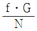
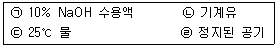
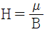
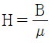

금속재료산업기사 (2013-09-28 기출문제)
1과목: 금속재료
1. 구상흑연주철의 구상화처리에서 용탕의 방치 시간이 길어지면 흑연의 구상화 효과가 없어지는 현상을 무엇이라 하는가?
- 경년(Secular)현상
- 전이(Transition)현상
- 페이딩(Fading)현상
- 전 탄소(Total Cabon)현상
(정답률: 78%)

2. 인장강도 130kgf/mm2급 이상의 초강인강에 나타나는 지체파괴의 원인이 아닌 것은?
- 잔류응력과 인장응력이 있는 경우
- 강재의 강도 수준이 낮은 경우
- 수소를 함유하는 환경에 있는 경우
- 미시적, 거시적 응력집중부가 있는 경우
(정답률: 57%)
3. 다음 중 쾌삭강에 대한 설명으로 틀린 것은?
- Ca 쾌삭강은 제강시에 Ca을 탄산제로 사용한다.
- 일반적인 쾌삭강은 공구 수명의 연장과 마무리면 정밀도에 기여한다.
- S 쾌삭강은 Mn을 0.4~1.5% 첨가하여 MnS로 이것을 분산시켜 피삭성을 증가시킨다.
- Pb 쾌삭강에서는 Pb가 Fe 중에 고용되므로 침브레이커(Chip Breaker)의 역할과 윤활제의 작용을 한다.
(정답률: 69%)
4. 스프링 강은 급격한 진동을 완화하고 에너지를 축적하는 기계요소로 사용한다. 탄성 한도를 높이고 피로 강도를 높이기 위하여 어떤 조직이어야 하는가?
- 소르바이트 조직
- 마텐자이트 조직
- 파라이트 조직
- 시멘타이트 조직
(정답률: 72%)
5. 아연을 함유한 구리 합금이 아닌 것은?
- 황동
- 청동
- 양은
- 델타메탈
(정답률: 71%)
6. Ni의 자기변태온도는 약 몇 ℃인가?
- 210℃
- 368℃
- 768℃
- 1,150℃
(정답률: 80%)
7. 조성이 Al-Cu-Mg-Mn이며, 고강도 Al합금에 해당되는 것은?
- 라우탈(Lautal)
- 실루민(Silumin)
- 두랄루민(Duralumin)
- 하이드로날륨(Hydronalium)
(정답률: 87%)
8. 철강재료의 5대 원소에 해당되지 않는 것은?
- P
- C
- Si
- Mg
(정답률: 89%)
9. 금속간 화합물인 탄화철(Fe3C)의 Fe의 원자비는 몇 %인가?
- 25%
- 35%
- 50%
- 75%
(정답률: 92%)
10. 0.6%C를 함유한 강은 어느 강에 해당되는가?
- 아공석강
- 과공석강
- 공석강
- 극연강
(정답률: 79%)
11. 탄소강 내에 존재하는 탄소 이외의 원소가 기계적 성질에 미치는 영향으로서 틀린 것은?
- Cu는 극수량이 Fe중에 고용되며 인장강도, 탄성한계를 높인다.
- P는 Fe의 일부와 결합하여 Fe3P화합물을 만들며, 임자의 조대화를 촉진한다.
- Si는 선철 및 탈산제 중에서 들어가기 쉽고, 인장력과 경도를 낮추며 언신과 충격치를 증가시킨다.
- S는 강중에서 FeS로 입계에 망상으로 분포하여 고온에서 약하고 가공할 때에 파괴의 원인이 된다.
(정답률: 62%)
12. 전열(電熱)합금의 특징에 대한 설명으로 틀린 것은?
- 재질이나 치수의 균일성이 좋을 것
- 열팽창계수가 작고, 고온강도가 클 것
- 전기저항이 낮고, 저항의 온도계수가 클 것
- 고온의 대시 중에서 산화에 견디고 사용온도가 높을 것
(정답률: 80%)
13. 반도체 재료의 종류 중에서 대표적인 반도체의 원소에 해당되지 않는 것은?
- Ge
- Si
- Ti
- Se
(정답률: 73%)
14. 다음 중 배빗메탈(Babbit Metal)에 해당되는 것은?
- 주석계 화이트 메탈
- 납계 화이트 메탈
- 구리계 베어링합금
- 오일리스 베어링 합금
(정답률: 76%)
15. 특정 모양의 재료로 인장하여 탄성한도를 넘어 소성변형시킨 경우에도 하중을 제거하면 원상태로 돌아가는 현상을 무엇이라 하는가?
- 초탄성
- 코트렐
- 초취성
- 비정질
(정답률: 92%)
16. 고온을 얻을 수 있고 온도조절이 용이하며 합금원소를 정확히 첨가할 수 있어 특수강의 제조에 사용되는 용해로는?
- 평로
- 용선로
- 고로
- 전기로
(정답률: 81%)
17. Al 합금을 용체화 처리한 후 일정온도에서 가열하여 경도를 향상시키는 것을 무엇이라 하는가?
- 양극산화처리
- 응력부식
- 가공경화
- 인공시효
(정답률: 52%)
18. 비정질 합금의 일반적인 특성을 설명한 것 중 틀린 것은?
- 구조적으로 장거리의 규칙성이 없다.
- 불균질한 재료이고, 결정이방성이 있다.
- 전기저항이 크고, 그 온도의존성은 작다.
- 강도가 높고 연성도 크나, 가공경화는 일으키지 않는다.
(정답률: 67%)
19. 수소저장합금에 대한 설명으로 틀린 것은?
- 무공해 연료이다.
- 수소저장성이 좋은 것은 Fe-Ti계가 있다.
- 수소의 흡수 방출속도가 작아야 한다.
- 활성화 쉽고 수소저장량이 많아야 한다.
(정답률: 79%)
20. Au 및 Au 합금에 대한 설명 중 옳은 것은?
- BCC구조를 갖는다.
- 전연성은 Ag보다 나쁘다.
- 비중은 약 19.3 정도이다.
- 22K 합금은 Au 함유량이 75%이다.
(정답률: 73%)
2과목: 금속조직
21. 철에서 C, N, H, B의 원자가 이동하는 확산기구는?
- 격자간 원자기구
- 공격자점 기구
- 직접교환 기구
- 링 기구
(정답률: 76%)
22. 일정한 압력 하에 있는 Fe-C 합금의 포정점이 일정한 온도와 조성에서 생기는 이유는?
- 상률 자유도 0이기 때문이다.
- 상률 자유도 1이기 때문이다.
- 상률 자유도 2이기 때문이다.
- 상률 자유도 ∞이기 때문이다.
(정답률: 79%)
23. 2성분계에서 융해(L)→고용체(A)+고용체(B)의 반응을 하는 것은?
- 포정반응
- 공석반응
- 공정반응
- 편정반응
(정답률: 59%)
24. 강의 공석변태온도(Eutectiod Temperature)를 낮추는 원소율로 짝지어진 것은?
- Mo, Si
- Ni, Mo
- Mn, Ni
- Si, Mn
(정답률: 48%)
25. 순금속 중에 다른 종류의 원자가 확산하는 현상은?
- 자기확산
- 입계확산
- 상호확산
- 표면확산
(정답률: 74%)
26. 결정립 내에 있는 원자에 비하여 결정입계에 있는 원자의 결합에너지 상태는?
- 결합에너지가 크므로 안정하다.
- 결합에너지가 크므로 불안정하다.
- 결합에너지가 적으므로 안정하다.
- 결합에너지가 적으므로 불안정하다.
(정답률: 63%)
27. 오스테나이트에서 펄라이트로의 변태 중 결정입도의 영향에 대한 설명으로 틀린 것은?
- 오스테나이트의 결정입도는 변태에 큰 영향을 미치며 핵생성은 에너지가 높은 장소에서 일어난다.
- 균질한 오스테나이트에서는 펄라이트의 핵생성은 거의 예외 없이 결정압계에서 일어난다.
- 오스테나이트의 결정립이 조대할수록 펄라이트구조를 형성할 핵을 적게 생성하며 미세한 펄라이트조직으로 된다.
- 오스테나이트의 결정입도는 펄라이트 층간 간격에 영향을 미치지 않으며 펄라이트 층간 간격은 변태온도에 의해서 결정된다.
(정답률: 62%)
28. 격자결함에 대한 설명으로 틀린 것은?
- 계면결함에는 가공, 수축공이 있다.
- 원자공공은 결정의 격자점에 원자가 들어있지 않는 상태이다.
- 결정격자 결함에는 점결함, 선결함, 계민결함, 체적결함이 있다.
- 격자간 원자는 결정격자의 격자점 중간위치에 여분의 원자가 끼어 들어간 상태이다.
(정답률: 59%)
29. 면심입방격자의 적층형식 ABCABCABCㆍㆍㆍ가 ABCABABCABCㆍㆍㆍ로 밑줄 친 부분과 같이 부분적 층이 조밀육방격자의 적층형식과 같이 되어 있는 것을 무엇이라 하는가?
- 조그
- 적층변위
- 적층결함
- 원자공공대
(정답률: 69%)
30. 연강을 인장시험한 후 얻은 응력-변형률 곡선이다. 하부 항복점 이후 변형을 계속 하기 위해 응력이 증가하는 이유는?
- 석출강화
- 가공경화
- 시효경화
- 고용강화
(정답률: 50%)
31. 탄소강의 조직에서 경도값(Hb)이 가장 적은 것은?
- α-고용체
- γ-고용체
- 시멘타이트
- 펄라이트
(정답률: 64%)
32. 다음 중 면심입방격자의 소속 원자수는?
- 1
- 2
- 3
- 4
(정답률: 81%)
33. 다음 중 자기변태점이 없는 금속은?
- Fe
- Ni
- Co
- Al
(정답률: 72%)
34. 풀림(Annealing)처리에 의해서 재결정 및 결정립성장이 일어난 금속을 더욱 고온으로 가열하면 소수의 결정립이 다른 결정립과 합해져서 매우 크게 성장하는 현상은?
- 풀림상정
- 정상경정성장
- 1차 재결정
- 2차 재결정
(정답률: 72%)
35. 금속간 화합물과 비교한 규칙격자의 특징으로 옳은 것은?
- 전기 저항이 작다.
- 규칙-불규칙 변태가 없다.
- 주기율표의 동족원소와 결합이 곤란하다.
- 복잡한 결정구조로 소성변형이 매우 어렵다.
(정답률: 41%)
36. 석출경화를 얻을 수 있는 경우는?
- 단순공정형 상태도를 갖는 합금의 경우에서
- 전율가용고용체 형을 갖는 합금의 경우에서
- 어떤 형의 상태도라도 모든 합금의 경우에서
- 온도 강하에 따라 고용한도가 감소하는 형의 상태도를 갖는 합금의 경우에서
(정답률: 70%)
37. 결정계 중 육방정계의 축장과 축각으로 옳은 것은?
- a=b=c, α=β=γ=90°
- a≠b≠c, α=β=γ=90°
- a≠b≠c, α≠β≠γ=90°
- a=b≠c, α=β=90°, r=120°
(정답률: 82%)
38. 다음 중 결정립 형성에 대한 설명으로 틀린 것은? (단, G는 결정성장속도, N은 핵 발생속도, f는 상수이다.)
- 결정립의 대소는

로 표현한다. - 금속은 순도가 높을수록 결정립의 크기가 작은 경향이 있다.
- G가 N보다 빨리 증대할 경우 결정립이 큰 것을 얻는다.
- N이 G보다 빨리 증대할 경우 결정립이 미세한 것을 얻을 수 있다.
(정답률: 72%)
39. 재결정 거동에 영향을 주는 요인이 아닌 것은?
- 조성
- 풀림 시간
- 초기 결정입도
- 재결정 시작 후 회복의 양
(정답률: 63%)
40. 다음의 결함 중 선결함에 해당하는 것은?
- 공공
- 전위
- 적층결함
- 크로디온
(정답률: 83%)
3과목: 금속열처리
41. 서로 다른 두 종류의 금속 양끝을 접속시켜 양쪽 접점 사이에 열기전력이 생기는데 이 열기전력 차를 이용하는 온도계는?
- 열전쌍온도계
- 저항온도계
- 방사온도계
- 광고온계
(정답률: 86%)
42. 재료의 담금질성 측정 방법에 사용되는 시험 방법은?
- 조미니시험
- 커핑시험
- 에릭션시험
- 샤르피시험
(정답률: 70%)
43. 담금질에 따른 용적의 변화가 가장 큰 조직은?
- 마텐자이트
- 펄라이트
- 베이나이트
- 오스테나이트
(정답률: 78%)
44. 1,400℃의 온도를 측정하려고 할 때 어떤 형태의 열전대가 적합한가?
- 천-콘스탄탄
- 구리-콘스탄탄
- 크로멜-알루멜
- 백금-백금-로듐
(정답률: 76%)
45. 침탄용강이 구비해야 할 조건을 설명한 것 중 옳은 것은?
- 고탄소강이어야 한다.
- 강재 주조시 표면에 결함이 있어야 한다.
- 침탄시 고온에서 장시간 가열시 결정입자가 성장하여야 한다.
- Cr, Ni, Mo 등을 첨가하여 침탄량을 증가시킬 수 있는 강이어야 한다.
(정답률: 69%)
46. 황화물의 편석을 제거하여 안정화 혹은 균질화를 목적으로 1,⑤0℃~1,300℃의 고온에서 실시하는 어닐링 방법은?
- 완전 어닐링
- 확산 어닐링
- 응력제거 어닐링
- 재결정 어닐링
(정답률: 41%)
47. 오스포밍(Ausforming)한 금속의 조직학적 특징을 설명한 것 중 틀린 것은?
- 마텐자이트 면이 크게 성장한다.
- 마텐자이트 입자의 미세화에 의해 강도가 증가한다.
- 마텐자이트의 핵생성이 일어나는 것이 매우 증가한다.
- 많은 수의 슬립선이 발생하므로 마텐자이트면의 성장이 방해된다.
(정답률: 32%)
48. 금속재료의 표면에 고속력으로 강철이나 주철의 작은 입자를 분사하여 피로강도를 현저히 증가시키는 표면경화법은?
- 배럴법
- 쇼트 피이닝
- 그라인딩
- 세라다이징
(정답률: 76%)
49. 활동제품의 내부응력을 제거하고 시기균열 및 경도저하를 방지하기 위한 적당한 풀림 온도와 냉각방법은?
- 300℃에서 서냉 또는 급냉한다.
- 400℃에서 진공 중에 냉각한다.
- 550℃에서 향온 유지 후 냉각한다.
- 700℃에서 급냉하거나 서냉한다.
(정답률: 69%)
50. [보기]는 담금질에서 사용되는 냉각제이다, 18℃의 물은 냉각능 1.0으로 하였을 때 200℃에서 냉각속도가 빠른 것부터 나열한 것은?

- ㉡→㉠→㉣→㉢
- ㉡→㉢→㉠→㉣
- ㉠→㉢→㉡→㉣
- ㉠→㉡→㉢→㉣
(정답률: 75%)
51. 뜨임균열의 방지대책으로 옳은 것은?
- 정해진 템퍼링 온도까지 최대한 빨리 가열한다.
- M3점, Mf점이 낮은 고합금강은 반복 뜨임을 실시한다.
- 고속도강은 탈탄층을 그대로 유지하여 뜨임 후 급냉한다.
- Cr, Mo, V 등의 합금원소는 뜨임균열을 촉진시키므로 사용을 줄인다.
(정답률: 49%)
52. 탄소강에 있어서 S곡선의 Nose 부근 온도는 약 ℃인가?
- 150℃
- 350℃
- 550℃
- 750℃
(정답률: 75%)
53. 인상 담금질(Time Quenching)에서 인상시기에 대한 설명으로 틀린 것은?
- 물건의 직경이나 두께는 보통 3mm에 대해서 1초 동안 물속에 담근 후 담근 후 즉시 꺼내어 유냉 또는 공랭시킨다.
- 강재를 갸름에 냉각시킬 때에는 두께 1mm에 대해서 30초 동안 담근 후 꺼내어 즉시 수냉시킨다.
- 강재를 물에 담가서 적열된 색깔이 없어질 때까지 시간의 2배 정도를 물에 담근 후 꺼내어 유냉 또는 공랭시킨다.
- 강재를 물에 담글 때 강이 식는 진동소리 또는 강이 식는 물소리가 정지되는 순간에 꺼내어 유냉 또는 공랭시킨다.
(정답률: 59%)
54. 열처리의 방법, 재질 및 형상에 따라 냉각방법은 달라지며 냉각장치는 냉각제의 종류와 작동방법에 따라 분류된다. 이러한 냉각장치에 해당되지 않는 것은?
- 헐셀 냉각장치
- 분무 냉각장치
- 프레스 냉각장치
- 염욕 냉각장치
(정답률: 63%)
55. 담금질성에 대한 설명으로 틀린 것은?
- Mn, Mo, Cr 등을 첨가하면 담금질성을 증가한다.
- 결정입도를 크게 하면 담금질성은 증가한다.
- B를 0.0025% 첨가하면 담금질성을 높일 수 있다.
- 일반적으로 S가 0.04% 이상이면 담금질성을 증가시킨다.
(정답률: 67%)
56. 열처리 로(Furnace)의 균일한 온도분포 유지를 위한 설명으로 틀린 것은?
- 전열식은 연소식보다 열원배치 및 제어가 쉽다.
- 가열형식은 직접가열보다 간접가열이 효과적이다.
- 로내 가스의 흐름은 정지상태보다 팬(Fan)교반이 유리하다.
- 승온과 유지시간이 짧을수록 온도분포를 균일하게 한다.
(정답률: 50%)
57. 열처리의 방법과 그 목적으로 틀린 것은?
- 풀림-연화
- 노멀라이징-조대화
- 담금질-경화
- 뜨임-인성부여
(정답률: 81%)
58. 탄소강에서 마텐자이트 변태가 시작되는 온도(Ms)에 대한 설명으로 틀린 것은?
- 미세결정립은 Ms점이 낮다.
- 얇은 시료의 Ms점은 두꺼운 것보다 높다.
- Ai, Ti, V, Co 등의 첨가원소는 Ms점이 낮아진다.
- 탄소강에서는 냉각속도가 빠르면 Ms점이 낮아진다.
(정답률: 53%)
59. 강재의 부품표면에 질소를 확산침투시키는 질화법의 종류가 아닌 것은?
- 가스 질화법
- 액체 질화법
- 이온 질화법
- 구상 질화법
(정답률: 61%)
60. 담금질한 공석강의 냉각곡선에 나타난 ㉠~㉢의 조직명으로 옳은 것은?(문제 오류로 냉각곡선이 없습니다. 정확한 내용을 아시는분 께서는 게시판 또는 관리자 메일로 부탁 드립니다. 정답은 1번 입니다.)
- ㉠ 펄라이트, ㉡ 마텐자이트 + 펄라이트, ㉢ 마텐자이트
- ㉠ 마텐자이트, ㉡ 마텐자이트 + 펄라이트, ㉢ 펄라이트
- ㉠ 마텐자이트 + 펄라이트, ㉡ 마텐자이트, ㉢ 펄라이트
- ㉠ 펄라이트, ㉡ 마텐자이트, ㉢ 마텐자이트 + 펄라이트
(정답률: 73%)
4과목: 재료시험
61. 초음파 탐상법에서 일반 강(Steel)에 사용하는 주파수의 범위는?
- 2~10 kHz
- 2~10 MHz
- 50~100 kHz
- 50~100 MHz
(정답률: 67%)
62. 사업장의 안전점검을 하기 위한 체크리스트 작성 시 유의사항으로 틀린 것은?
- 사업장에 적합한 독자적인 내용일 것
- 일정 양식을 정하여 점검대상을 정할 것
- 점검표의 내용은 이해하기 쉽도록 표현하고 구체적일 것
- 위험성이 낮은 순으로 하거나, 긴급을 요하지 않는 순으로 작성할 것
(정답률: 83%)
63. 금속조직시험 시료 연마에서 사포 또는 벨트 그라인더로 연마하여, 연마 도중 가열 또는 가공에 의한 시료에 변질이 일어나지 않도록 가장 먼저 연마하는 공정은?
- 거친 연마
- 중간 연마
- 미세 연마
- 전해 연마
(정답률: 77%)
64. 굴곡 시험으로 알 수 없는 것은?
- 전성
- 경도
- 굽힘 저항
- 균열의 유무
(정답률: 59%)
65. γ선 장비의 투과검사의 특징을 설명한 것 중 틀린 것은?
- 외부 전원이 필요없다.
- 열려 있는 작은 직경에도 사용할 수 있다.
- 360° 또는 일정 방향으로 투사의 조절이 가능하다.
- 초점이 길어서, 짧은 초점-필름 거리가 필요한 경우
(정답률: 53%)
66. 만능시험기(UTM)로 측정할 수 있는 사항은?
- 누설량
- 피로한도
- 연신율
- 부식정도
(정답률: 62%)
67. 브리넬(Brinell)경도를 측정할 때 필요하지 않은 것은?
- 시험판에 가하는 하중의 크기
- 사용된 시험편의 중량
- 시험표면에 나타난 압흔의 직경
- 압흔을 내는데 사용된 강구(Stee Ball)의 직경
(정답률: 79%)
68. 인장시험편에 대한 설명으로 틀린 것은?
- 인장시험편의 규격은 KS 0801에 규정되어 있다.
- 시험편은 일반적으로 판상 또는 봉상으로 되어 있다.
- 시험편은 그 모양 및 치수에 따라 1호~2호 시험편으로 구분한다.
- 시험편 중앙에 있는 단면이 균일한 부분을 평행부라고 한다.
(정답률: 67%)
69. 크리프 곡선에서 변형속도가 일정한 과정을 나타내는 것은?
- 초기 크리프
- 정상 크리프
- 가속 크리프
- 파단 크리프
(정답률: 83%)
70. 재료에 반복 응력을 적용하여 영구히 재료가 파괴되지 않는 용해 중에서 최대의 응력을 무엇이라고 하는가?
- 탄성한도
- 피로한도
- 크리프한도
- 비례한도
(정답률: 65%)
71. 좌굴(Buckling)파괴형식은 어느 경우에 나타나는가?
- 인장시험
- 압축시험
- 전단시험
- 경도시험
(정답률: 61%)
72. 금속조직검사를 위한 일반적인 방법은?
- 초음파 시험
- 피로시험
- 형광시험
- 현미경시험
(정답률: 79%)
73. 자장의 세기를 H, 투자율을 μ, 자속밀도를 B라고 할 때 자장의 세기를 나타내는 식은?
- H=Bμ


- H=B+μ
(정답률: 62%)
74. 상대적으로 단단한 입자나 미세돌기와의 접촉에 의해 표면으로부터 마모입자가 이탈되는 현상으로 마모면에 긁힘 자국이나 끝이 파인 홈들이 나타나게 되는 마모는?
- 응착마모(adhesive Wear)
- 피로마모(Fatigue Wear)
- 연삭마모(Abrasive Wear)
- 부식마모(Corrosion Wear)
(정답률: 81%)
75. 응력 측정 시험의 종류가 아닌 것은?
- 강박 시험
- 광탄성 시험
- 전기적인 변형량 측정법
- 기계적인 변형량 측정법
(정답률: 60%)
76. 100배로 된 금속의 미세조직사진으로 ASTM결정립도를 결정하고자 한다. 만일 lin2 256개의 결정립이 있다면 ASTM 결정립도 번호는 얼마인가?
- 7
- 8
- 9
- 10
(정답률: 56%)
77. 충격시험과 관계없는 용어는?
- 파괴인성
- 눌림저항
- 충격에너지
- 샤르피시험법
(정답률: 69%)
78. 샤르피 충격시험에서 시험편의 설치방법은?
- 수평으로 설치하며, 해머와 노치부가 마주치도록
- 수평으로 설치하며, 해머와 노치부의 반대쪽이 마주치도록
- 수직으로 설치하며, 해머와 노치부가 마주치도록
- 수직으로 설치하며, 해머와 노치부의 반대쪽이 마주치도록
(정답률: 61%)
79. 다음 중 불꽃시험에 대한 설명으로 틀린 것은?
- 불꽃에 가장 큰 영향을 주는 원소는 수소이다.
- 불꽃의 모양은 뿌리, 중앙, 끝으로 되어 있다.
- 검사는 언제나 같은 방법, 같은 조건하에서 행해야 한다.
- 불꽃 유선의 길이, 유선의 색, 불꽃의 수를 보고 강종을 판별한다.
(정답률: 80%)
80. 자분탐상검사로 검출하기 어려운 결함은?
- 겹침(Laps)
- 이음매(Seams)
- 표면균열(Crack)
- 내부 깊숙이 존재하는 동공(Cavity)
(정답률: 82%)